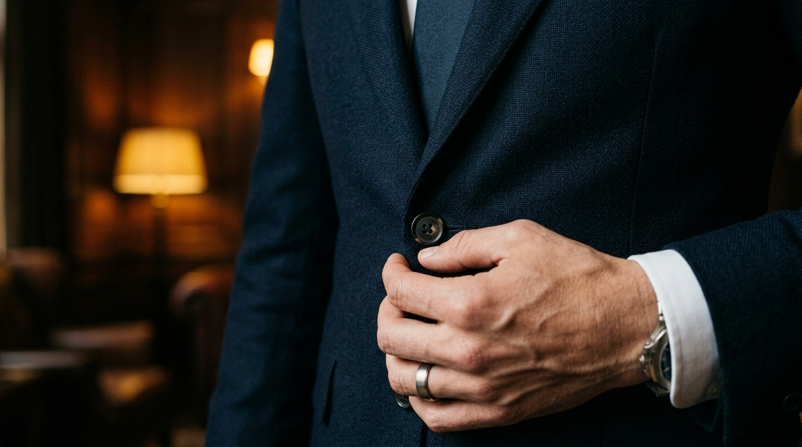
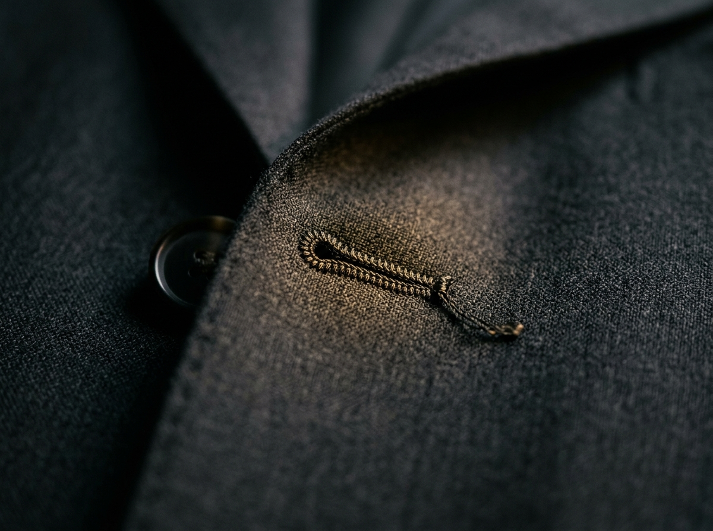
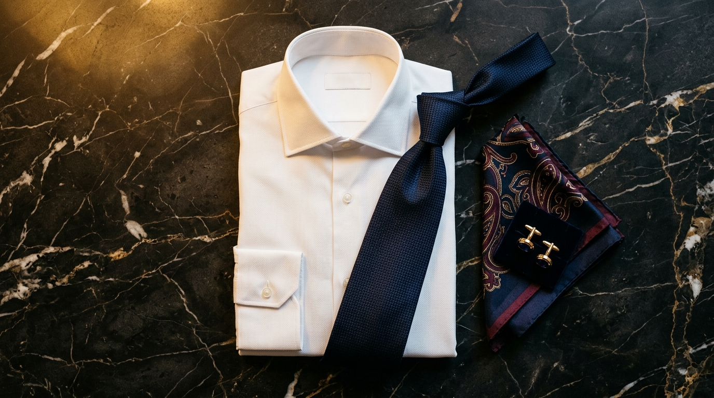

Alfaiataria
Como Abotoar o Terno Corretamente
A regra do abotoamento é um dos pilares da etiqueta masculina. Descubra como usar cada configuração com elegância.
Ler ArtigoAlfaiataria Premium • Vale dos Sinos
Cada peça é pensada para o executivo que conquista com presença, confiança e estilo impecável.
Corte slim com acabamento refinado
Tecidos selecionados e costura impecável
Tradição gaúcha em moda masculina
Nossas Peças
Vista-se com a confiança de quem conquista. Cada peça é selecionada para o executivo do Vale dos Sinos.

Nossa Essência
Cada peça Vero Eleganza carrega o legado da alfaiataria clássica, unido à precisão do corte contemporâneo. Selecionamos tecidos que falam a linguagem da elegância.
Poliviscose premium e algodão egípcio para conforto e durabilidade.
Modelagem que valoriza a silhueta do executivo moderno.
Costura reforçada e atenção a cada detalhe, do botão à lapela.
Exclusividade
Uma experiência reservada para cavalheiros que valorizam o refinamento. Peças exclusivas, curadoria personalizada e benefícios únicos.
O Clube Vero Eleganza ainda não está disponível, mas estamos preparando uma experiência exclusiva para você. Cadastre-se na lista de espera e seja o primeiro a saber quando abrirmos as portas.
Peças selecionadas sob medida para o seu perfil e estilo
Condições especiais e acesso antecipado a novas coleções
Atendimento prioritário e orientação de estilo personalizada
Estilo & Conhecimento
Conteúdo exclusivo para o executivo que busca se vestir com maestria. Cada detalhe importa.

Alfaiataria
A regra do abotoamento é um dos pilares da etiqueta masculina. Descubra como usar cada configuração com elegância.
Ler Artigo
Combinações
Reuniões importantes pedem combinações que transmitam autoridade e bom gosto. Veja as 5 composições infalíveis.
Ler ArtigoInverno Gaúcho
No frio do Vale dos Sinos, o suéter é a peça-chave para unir conforto e elegância no dia a dia executivo.
Ler Artigo